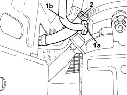
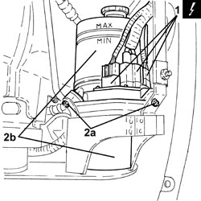
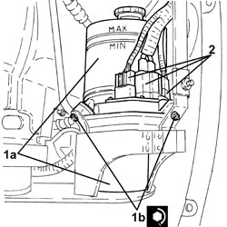
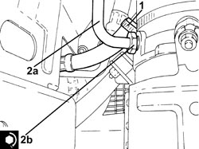
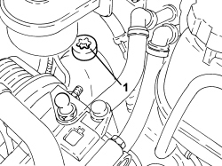
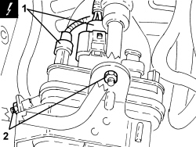
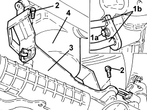
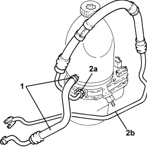

4130B25 POWER STEERING PUMP ASSEMBLY R R FOR VERSIONS WITH AIR CONDITIONER
- Path
- Procedures > 41 STEERING UNIT > 4130 POWER STEERING > 4130B POWER STEERING HYDRAULIC SYTEM > 4130B25 POWER STEERING PUMP ASSEMBLY R R FOR VERSIONS WITH AIR CONDITIONER
- Kind
- repair procedure (removal / refitting; the operation number is the code)
- Applies to
- all engines; all production periods
- Interactive page
- https://sloeber94.github.io/elrnDB-fCrm/en/#/194000532
Applies to: engines: 2.2; all production periods
 Removing
Removing
 Refitting
Refitting- Position the vehicle on a lift.
- Make sure that the ignition key is in the OFF position, then disconnect the battery terminal (-).
Description | Connector | |
|---|---|---|
- | Battery |
Op. 4450B04 RIGHT FRONT WHEEL - R.R
Op. 7055B66 ENGINE COMPARTMENT DUST COVER IN RIGHT FRONT WHEEL ARCH - R.R.
Op. 7055B91 RIGHT FRONT WHEEL ARCH LINER - R.R.
1. Undo the connector (1a) and disconnect the supply pipe from the pump to the power assisted steering box (1b), pump side.
2. Loosen the band and disconnect the power assisted steering fluid reservoir return pipe, reservoir side.

Applies to: engines: 2.2; all production periods
1. Disconnect the electrical connections from the power steering pump.
Description | Connector | |
|---|---|---|
1 | Electric steering control unit |
2. Undo the nuts (2a) and remove the power assisted steering pump assembly (2b).

Applies to: engines: 2.2; all production periods
Refitting
Removing1. Position the power steering pump assembly (1a) in its housing and secure it by tightening the nuts (1b) to the recommended torque.
Component | Fastening | dia | Value (daNm) | Validity |
|---|---|---|---|---|
Power steering electric pump | Nut | - | (support side) 0.6 - 0.8 | 2.2 |
2. Connect the electrical connections to the power steering pump.

Applies to: engines: 2.2; all production periods
1. Connect the return pipe from the power assisted steering box to the fluid reservoir, reservoir side and tighten the band.
2. Connect the supply pipe from the pump to the power assisted steering box (2a), pump side side and tighten the connector (2b) to the recommended torque.
Component | Fastening | dia | Value (daNm) | Validity |
|---|---|---|---|---|
Supply pipe from pump to power assisted steering box | Connector | M16x1.5 | (electric pump side) 3.0 |

Applies to: engines: 2.2; all production periods
Op. 7055B91 RIGHT FRONT WHEEL ARCH LINER - R.R.
Op. 7055B66 ENGINE COMPARTMENT DUST COVER IN RIGHT FRONT WHEEL ARCH - R.R.
Op. 4450B04 RIGHT FRONT WHEEL - R.R
- Connect the negative battery terminal.
Op. 0010T71 POWER STEERING FLUID CHECK LEVEL AND TOP UP IF NECESSARY
Op. 0010T75 HYDRAULIC POWER STEERING SYSTEM BLEED AIR
- Remove the vehicle from the lift.
Applies to: engines: 1.8, 1.9 JTD 8v, 1.9 JTD 16v, 2.4 JTD 20v; all production periods
Removing
Refitting- Position the vehicle on a lift.
- Make sure that the ignition key is in the OFF position, then disconnect the battery terminal (-).
Description | Connector | |
|---|---|---|
- | Battery |
Op. 7055B54 UNDER ENGINE PROTECTION/GUARD - R.R.
Op. 1076B72 INTERMEDIATE EXHAUST PIPE WITH HOSE SECTION - R+R
Op. 1008C34 BRACKET ON GEARBOX FOR LOWER REACTION ROD - R.R.
1. Undo the cap and draw off the power assisted steering fluid from the reservoir using a suitable syringe.

Applies to: engines: 1.8, 1.9 JTD 8v, 1.9 JTD 16v, 2.4 JTD 20v; all production periods
1. Disconnect the electrical connections from the power steering pump.
Description | Connector | |
|---|---|---|
1 | Electric steering control unit |
2. Undo the nuts fixing the power assisted steering pump to the mounting.

Applies to: engines: 1.8, 1.9 JTD 8v, 1.9 JTD 16v, 2.4 JTD 20v; all production periods
1. Undo the bolt (1a) and disconnect the oil delivery and return pipes (1b) from the power assisted steering box.
2. Undo the bolts fixing the power assisted steering pump mounting to the power steering box.
3. Move the power assisted steering pump mounting to the side.
4. Remove the power assisted steering pump complete with pipes.
- Keep the power assisted steering pump mounting.

Applies to: engines: 1.8, 1.9 JTD 8v, 1.9 JTD 16v, 2.4 JTD 20v; all production periods
1. Working at the bench, loosen the band, disconnect and remove the return pipe from the power assisted steering box to the power assisted steering fluid reservoir.
2. Undo the connector (2a) then disconnect and remove the supply pipe (2b) from the pump to the power assisted steering box.

Applies to: engines: 1.8, 1.9 JTD 8v, 1.9 JTD 16v, 2.4 JTD 20v; all production periods
Refitting
Removing- Place the supply pipe from the pump to the power assisted steering box back in its housing and tighten the connector to the recommended torque.
Component | Fastening | dia | Value (daNm) | Validity |
|---|---|---|---|---|
Supply pipe from pump to power assisted steering box | Connector | M16x1.5 | (electric pump side) 3.0 |
- Place the return pipe from the power assisted steering box to the fluid reservoir back in its housing and tighten the band.
- Place the power assisted steering pump complete with pipes and mounting back in its housing.
- Tighten the bolts fixing the power assisted steering pump mounting to the power steering box.
- Connect the supply and return pipes to the power assisted steering box and secure them tightening the bolt to the recommended torque.
Component | Fastening | dia | Value (daNm) | Validity |
|---|---|---|---|---|
Inlet/outlet pipes on power assisted steering box | Bolt | M8 | (power assisted steering box side) 1.0 - 1.2 |
- Tighten the nuts fixing the power assisted steering pump to the mounting.
- Connect the electrical connections to the power steering pump.
Op. 1008C34 BRACKET ON GEARBOX FOR LOWER REACTION ROD - R.R.
Op. 1076B72 INTERMEDIATE EXHAUST PIPE WITH HOSE SECTION - R+R
Op. 7055B54 UNDER ENGINE PROTECTION/GUARD - R.R.
- Connect the negative battery terminal.
Op. 0010T71 POWER STEERING FLUID CHECK LEVEL AND TOP UP IF NECESSARY
Op. 0010T75 HYDRAULIC POWER STEERING SYSTEM BLEED AIR
- Remove the vehicle from the lift.
Topics linked from this page (10)
- 0010T71 POWER STEERING FLUID CHECK LEVEL AND TOP UP IF NECESSARY
- 0010T75 HYDRAULIC POWER STEERING SYSTEM BLEED AIR
- 1008C34 BRACKET ON GEARBOX FOR LOWER REACTION ROD - R.R.
- 1076B72 INTERMEDIATE EXHAUST PIPE WITH HOSE SECTION - R+R
- 4450B04 RIGHT FRONT WHEEL - R.R
- 7055B54 UNDER ENGINE PROTECTION/GUARD - R.R.
- 7055B66 ENGINE COMPARTMENT DUST COVER IN RIGHT FRONT WHEEL ARCH - R.R.
- 7055B91 RIGHT FRONT WHEEL ARCH LINER - R.R.
- A001 BATTERY
- M086 CONTROL UNIT
Topics that link to this page (6)
- H010 STEERING HARD / (STEERING IN BOTH DIRECTIONS)
- S035 NOISE ' POWER ASSISTED STEERING / END OF TRAVEL
- 4110AB STEERING ANGLE SENSOR CHECK (SRS) on steering box
- 4130B32 POWER STEERING PUMP SUPPORT - R R
- 4130B40 SUPPLY PIPE FROM PUMP TO POWER STEERING BOX - R.R.
- 4130B42 RETURN PIPE FROM POWER STEERING BOX TO POWER STEERING FLUID RESEVIOR - R.R.